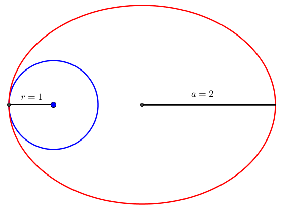
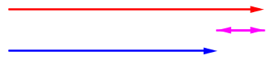

We have begun a collection of tools that illustrate important aspects of the physics of various undertakings in space. Getting a feel for how your equipment interacts with the environment is really central to designing life in space. We will expand and refine all these with time, making them more intuitive with graphics, combining them, and so on.
Mass ratio:
Exhaust velocity: (m/s)
use Isp instead
Initial location:
Latitude LongitudeDestination location:
Latitude Longitude
More about suborbital hops here, by Hop David.
Start distance: (distances are from the centre of the Moon towards Earth)
use lunar surfaceEnd distance
use EML1Material strength:
use ZylonParameters required to calculate elevator mass:
Payload mass:
Safety factor:
Navigation a spacecraft can best be understood as moving a heavy bowling ball. When it is up to speed, it continues to move, without anything pushing it. What requires effort is to change the direction it is moving, give it more speed, or slow it down. Coasting along is "free". The cost of a maneuver is the required change in velocity, commonly referred to as Delta-v.
An orbit is an example of coasting along for free. When in an orbit, a spacecraft does not use its thrusters, and gravity bends its path, most often to an ellipse. Thus, you can leave your spacecraft in an orbit for as long as you like.
However, when we want to change our spacecraft's orbit, we have to change our velocity, thus draining from our Delta-v budget. A spacecraft always has a limited amount of Delta-v, so making transfers between orbits as cheap as possible is a major considerations in spacecraft navigation.
Every way of changing the velocity of a spacecraft is based upon the conservation of momentum. That is, if you take every object in a system, multiply their mass and velocity, and take their sum, the value you get is constant. That means throwing propellant in one direction causes something else in to move in the opposite direction in order to keep the momentum constant. That "something" is your spacecraft.
The obvious limitation should then be clear: We have a limited amount of propellant to throw away. Making
the propellant go faster makes the required amount smaller, so that helps. This is the exhaust velocity
of the rocket. Another measure for the exact same thing is Isp (specific impulse). That is just
the exhaust velocity divided by the standard gravity at sea level (9.81 m/s²). Here is our first important
equation, used to calculate Delta-v:
$$
\Delta v=v_e \cdot ln\left(\frac{m_{initial}}{m_{final}}\right)
%Seeing gibberish here instead of an equation? Seems like we screwed up. Please contact us
$$
This is the Tsiolkovsky rocket equation. Tsiolkovsky figured out how rockets worked before planes where invented. Let us see how it works:
$v_e$ is the exhaust velocity
$m_{initial}$ is the mass of the entire spacecraft before you start the burn
$m_{final}$ is the mass of the spacecraft after the burn. $\frac{m_{initial}}{m_{final}}$ is often called the mass parameter.
$ln$ is the natural logarithm. You should have a button labelled that on your calculator.
A calculator implementation of this equation is at the top of this page.
As it is desirable to have as high a exhaust velocity as possible, the goal of all kinds of rocket propulsion is to cram as much propellant into the propellant stream as physically possible
This is the most common way of rocket propulsion, and gets the energy from chemical reactions of fuel. The exhaust products also doubles as the reaction mass. The most common rocket fuels are kerosene like hydrocarbons and liquid oxygen. For higher performance, but at the cost of a more coplicated design, hydrogen can be used instead of kerosene. There are also many other fuels mostly focusing on easy to store and failproof engines. Solid rocket fuel is often used for boosters and does not offer a high performance, but has decent thrust.
The amount of energy that can be stored as chemical compounds is limited, and chemical rockets are also forced to use less than optimal exhaust products as reaction mass. In general, ligther molecules are better, but no chemical reaction that produces large amount energy also produce hydrogen gas. Nuclear engines bypass this issue by using a reactor to heat the flow of propellant, making use of hydrogen gas possible, this makes the exhaust velocity twice as large as chemical rockets. On the other hand, they often has lower thrust.
If high thrust is not a concern, for instance when the maneuver can take weeks or months, ion engines can be used. They work by using magnetic or electrostatic forces to accelerate an ionized gas, causing it to reach a very high velocity. This type of engine uses a lot of electricity and the thrust is low, but the efficiency can be far better than both chemical and nuclear rocket engines. A possible use is a cargo craft slowly spiraling between the Moon and low Earth orbit.
It is technically not necessary to expand propellant. A solar sail uses the minuscule pressure light exerts when it hits something. If you have a very thin and large sail, this force can be used for transportation or station keeping ("hoovering"). The light can also be supplied by external lasers to increase performance, giving $6.67 \cdot 10^{-9} N/W$ for a reflective sail. Solar sails are direction sensitive as they can not tack directly towards the light source.
The following terms are important when describing an orbit:
We have a spacecraft orbiting in a circular orbit. What is its velocity? $$v=\sqrt{\frac{\mu}{r}}$$ $v$ is of course the velocity. $\mu$ is the gravitational parameter. You would often see that as $GM$, which is the same thing. That is the mass of the object you are orbiting ($M$) multiplied with the gravitationa constant ($G=6.674 \cdot 10^{-11} \frac{m^3}{kg s^2}$).
To save you some time:
Using that information, we can calculate things like the orbital velocity in low Earth orbit: $\sqrt{\frac{\mu _{Earth}}{r_{LEO}}}=\sqrt{\frac{3.986 \cdot 10^{14} \frac{m^3}{s^2}}{6600000m}}=7771 \frac{m}{s}$
But wait a minute, not all orbits are circles! How can be calculate the orbital velocity in an elliptical oribt? Well, first of all, the velocity varies depending on where in the orbit you are, having a larger velocity in the periapsis than in the apoapsis. But there is an equation here to: $$v=\sqrt{\mu \left(\frac{2}{r}-\frac{1}{a}\right)}$$ $r$ is here your current distance to the centre of the object you are orbiting, and $a$ is the semi-major axis that we just talked about. Notice that in the case of a circular orbit, $r=a$ so this equation simplifies back to $v=\sqrt{\frac{\mu}{r}}$
We can already start to put the things we have learned together. Take a look at the figure below. Imagine you are orbiting in the blue orbit, and want to change to the red orbit:
What do you do? Well, take a look at the point where the orbits touh each other. Why are we in the blue orbit there, and not in the red one? After all, you can be in that location if you where in the red orbit too. Not everything is the same. What matters here is that you would have a different velocity, depending on what of the orbits you are in. Let us calculate that. We say $\mu = 1$ for simplicity: $$v_{blue}=\sqrt{\frac{1}{1}}=1$$ $$v_{red}=\sqrt{1\left(\frac{2}{1}-\frac{1}{2}\right)}=1.225$$
